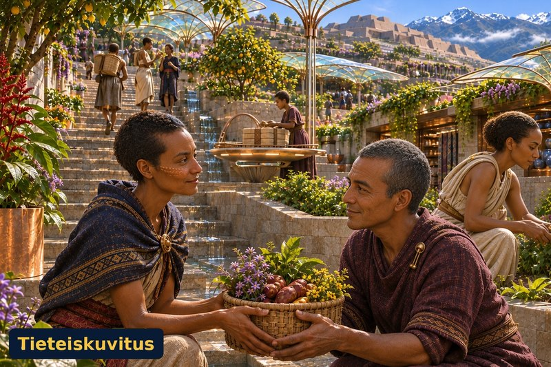

Лица каменного города
Вымысел. ИИ-иллюстрации воображаемого каменного города. В каждой паре сначала исходный материал Яни Корпи (Jani Korpi), затем ИИ-иллюстрация, вдохновлённая контуром черепа. Большая часть исходного материала — фотографии из Перу; пара 02 составлена из стоп-кадров видео, а пары 12–13 включают кадры видео со скульптурами в Каире. Каменный город и его жители вымышлены.
День в каменном городе (вымысел)
Эта история вымышлена. Она не описывает историю Перу или Египта, и её персонажи никак не связаны с умершими людьми, которых видно на фото. История связывает тринадцать иллюстраций в события одного воображаемого дня.
Каменный город построен террасами на склоне горы. Каналы приносят воду из родников выше по склону, а стеклянные навесы затеняют переулки. В городе всё измеряется: швы между камнями, уровень воды и угол света. Измерение здесь — общий язык.
В центре дня — три человека. Оптик Илун шлифует призмы, которыми городские землемеры считывают углы. Смотрительница канала Сава следит, чтобы каждая терраса в свой черёд получала воду. Ткачиха Тиру делает тканевые навесы, которые защищают рынок и сады от полуденного солнца.
Утром Сава замечает, что до нижних террас доходит слишком мало воды. Неполадка может быть в уклоне канала, в треснувшем шве или в шлюзе. В течение дня город вместе ищет причину: каменотёс проверяет швы, садовница читает по растениям признаки засухи, а строители приносят новый стеклянный навес над местом, где делят воду. На рынке люди обменивают кукурузу, корзины и новости.
Вечером вода снова течёт. Тиру чинит край тканевого навеса, а водомерщик выставляет последний шлюз. Формы взяты с фотографий Яни; события, имена и персонажи вымышлены.
01 · Оптик настраивает призму


Рассказ (вымысел): Утро начинается в измерительной мастерской. Илун поворачивает призму, пока луч света не попадёт в метку. Позже Сава будет считывать той же призмой углы канала, поэтому работу нужно закончить до того, как солнце поднимется над террасами.
Исходная точка: Ширина лба и расстояние между глазницами определили форму верхней части лица. Челюсть и рот — выбор иллюстратора.
Исходное фото 01 и наблюдения · Пары 04 и 10, возможно, показывают тот же предмет, что и эта пара.
Подробнее о странице и показать все 13 пар
Страница основана на идее Яни о развитом вымышленном обществе, существовавшем до людей. Черепа на исходных фото — человеческие останки. В изученном материале Паракаса удлинённую голову интерпретировали как формирование в детстве; индивидуальные особенности именно тех черепов, которые сфотографировал Яни, не подтверждены. Каменный город и его жители вымышлены. Черепа на исходных фото — человеческие останки, происхождение и история коллекции которых известны лишь частично (см. страницу фактов). Поэтому иллюстрации не изображают этих людей, а фото черепов служат здесь лишь отправной точкой для форм. ИИ-инструмент, использованный для иллюстраций, в данных изображений не записан. Медно-рыжие волнистые волосы, подчёркнутые верх черепа и затылок, большие глаза, маленькие подбородок и нос — художественные решения, вдохновлённые амарнским искусством. Иллюстрация не является ни реконструкцией лица, ни научным результатом о цвете глаз или волос.
В каждой паре сначала фото Яни, а рядом или ниже — ИИ-иллюстрация, вдохновлённая контуром черепа, то есть вымысел. Номер связывает исходное фото и иллюстрацию. На исходных фото часто нет нижней челюсти, поэтому челюсть и рот — решение иллюстратора. Выражения лиц, цвет кожи, волосы и быт персонажей принадлежат каменному городу. Иллюстрация не может сообщить черты лица, вид или облик умершего.
Что рассказывают черепа?Страница фактов: фото 01–11, тексты экспозиции и опубликованные исследования.
02 · По переулку везут груз камня


Рассказ (вымысел): Груз камня движется по узкому переулку к самой нижней террасе. Возница знает только, что к вечеру для края канала нужны новые блоки. Где неисправность, пока никто не знает.
Исходная точка: Лоб персонажа поднимается довольно круто. Образцом послужил светлый череп в верхнем ряду видеоподборки.
03 · Камнерезчица проверяет шов


Рассказ (вымысел): Каменотёска рассматривает через линзу старый шов канала. Шов цел. Она передаёт Саве: неисправность не в камне, а где-то выше.
Исходная точка: На боковом виде, повёрнутом вправо, главная форма — линия от лба к изогнутому назад затылку.
04 · Садовник рассматривает семенной стручок


Рассказ (вымысел): На самой нижней террасе садовник раскрывает семенной стручок и видит, что тот высох слишком рано. Он говорит, что уже несколько дней воды приходит меньше.
Исходная точка: Округлая форма с фото 01 повторяется в верхней части лица. Руки помогают оценить пропорции исходного снимка.
Исходное фото 04 и наблюдения · Пары 01 и 10, возможно, показывают тот же предмет, что и эта пара.
05 · Смотрительница канала измеряет перепад высот


Рассказ (вымысел): Сава ставит нивелир на край канала и точка за точкой измеряет перепады высот. Замер показывает, что уклон канала правильный. Значит, неисправность — в распределительном узле или в шлюзе.
Исходная точка: Отправной точкой стал повёрнутый влево профиль черепа на переднем плане. Изгиб затылка продолжается за ухом.
06 · Ткачихи рассматривают ткань


Рассказ (вымысел): Ткачихи поднимают к свету тонкую ткань. Тиру нужен тканевый навес над распределительным узлом, чтобы вода не испарялась в полуденную жару. Ткань должна быть лёгкой, но плотной.
Исходная точка: Темя левого черепа уходит назад. Контур правого поднимается круче.
07 · Встреча на кукурузном рынке


Рассказ (вымысел): На кукурузном рынке трое горожан обмениваются товарами и новостями. Слух о нехватке воды ходит с самого утра. Рынок договаривается, что строители отнесут к распределительному узлу новый стеклянный навес.
Исходная точка: Три ракурса подсказали три разных контура лица. Средний персонаж на рынке задуман взрослым.
08 · Стеклянный навес проносят через ворота


Рассказ (вымысел): Двое строителей проносят через ворота изогнутый стеклянный навес. Он тяжёлый и хрупкий, поэтому они идут медленно и на каждом шагу переглядываются.
Исходная точка: Более прямую форму левого черепа и более мягкую линию лба правого лучше всего видно при сравнении сторон.
09 · Песня водяного колеса


Рассказ (вымысел): Водяное колесо звучит неправильно. Сава и её помощница прислушиваются и находят у распределительного узла заклинивший затвор. Когда затвор освобождается, звук колеса меняется, и вода начинает двигаться.
Исходная точка: Разный наклон левой и правой головы дал лица двум жителям, склонившимся над водяным колесом.
10 · Флейтист в каменном переулке


Рассказ (вымысел): Когда вода снова течёт, Илун выходит из мастерской и играет в переулке на флейте сигнал, который знает весь склон. Верхние террасы отвечают той же мелодией.
Исходная точка: Боковой вид показывает округлое темя и край глазницы. Форма губ и челюсти музыканта придумана.
Исходное фото 10 и наблюдения · Пары 01 и 04, возможно, показывают тот же предмет, что и эта пара.
11 · Обмен корзинами в городе террас



Рассказ (вымысел): На террасах люди обмениваются корзинами. Садовник отправляет на рынок первые спасённые растения, а с соседней террасы возвращаются фрукты.
Исходная точка: Множество контуров в витрине подсказало вид города. Жители на переднем плане придуманы для этой сцены.
12 · Ткачиха чинит тканевый навес

Обратите внимание на изгиб свода черепа, линию лба и на то, как далеко выступает затылок. Снимки, сделанные с разных направлений, не позволяют сравнить точные пропорции. Ниже — трактовка иллюстратора.

Рассказ (вымысел): Под вечер Тиру чинит край тканевого навеса. Весь день он защищал распределительный узел, и ветер прорвал в его углу небольшую дыру. Она протягивает нить до темноты.
13 · Замерщица канала регулирует затвор

Обратите внимание на изгиб свода черепа, линию лба и на то, как далеко выступает затылок. Снимки, сделанные с разных направлений, не позволяют сравнить точные пропорции. Ниже — трактовка иллюстратора.

Рассказ (вымысел): Последним водомерщик выставляет шлюз на ночь и записывает для Савы дневные замеры. Утром призма Илуна проверит, удержались ли углы за ночь.
Каменные лица Каира и черепа Перу
Головы из Амарны — скульптуры, и музеи описывают удлинённый свод черепа как стилистическую черту амарнского искусства (Global Egyptian Museum, JE 44869 · Египетский музей Берлина, ÄM 14145). Перуанские черепа — человеческие останки; в изученных материалах Паракаса удлинённую голову истолковали как результат придания формы в детстве (научный контекст). Связь между ними лишь визуальная.
Пары 12 и 13 ставят рядом каменные головы, которые Яни снял в Египетском музее в Каире 15 февраля 2024 года, фотографии черепов из Перу и персонажей каменного города. Исходные изображения из Каира — фрагменты кадров из видео Яни (экскурсия по музею с 51:31). Лица посторонних людей размыты. Каирские фотографии и научный контекст есть также на странице фактов: Каир 2024.
Номера предметов на кадрах Яни не различимы, поэтому карточка предмета музея — точка сравнения, а не идентификация. В собрании Египетского музея в Каире есть кварцитовая голова JE 44869, найденная в Телль-эль-Амарне, которая, по данным Global Egyptian Museum, вероятно, изображает Меритатон, старшую дочь Эхнатона. Немецкое общество Deutsche Orient-Gesellschaft раскопало её в 1912 году в мастерской скульптора Тутмоса (Global Egyptian Museum). Каменное лицо амарнской царевны того же типа есть и в Нью-Йорке (The Met, Head of a princess from a group statue). Собственная карточка предмета каирского музея: Head of Princess, daughter of Akhenaten.
Та же экспозиция в перуанском видео

Общая деталь помогает опознать витрину. Точное место находки и принадлежность предметов в витрине остаются открытыми. Фото 09 на странице фактов.
Ещё один пример из Амарны: берлинский семейный рельеф

Берлинский семейный рельеф показывает, как профили царской семьи изображались также вырезанными на плоской каменной поверхности. Свод черепа у дочерей вытягивается назад. По словам музея, эта черта — чисто стилистический приём, а не признак наследственной или намеренно вызванной формы (описание рельефа музеем, на английском).
Выражения лиц, цвет кожи, волосы и повседневная жизнь персонажей принадлежат воображаемому каменному городу. Некоторые фотографии показывают один и тот же предмет с разных сторон.